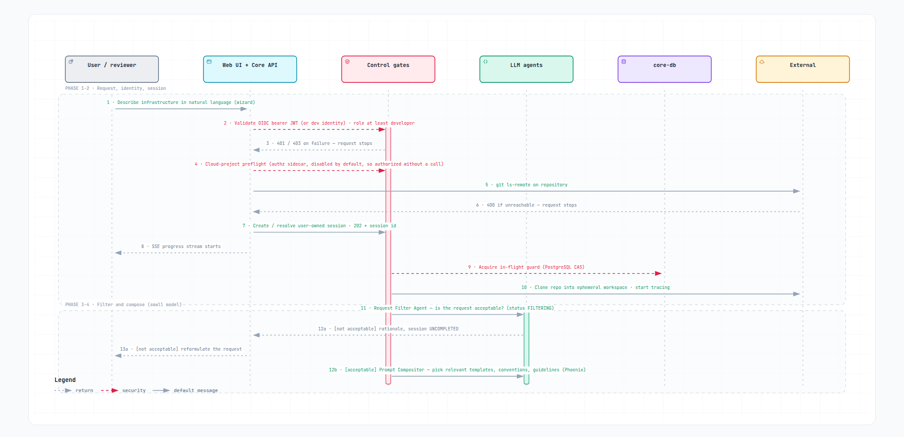
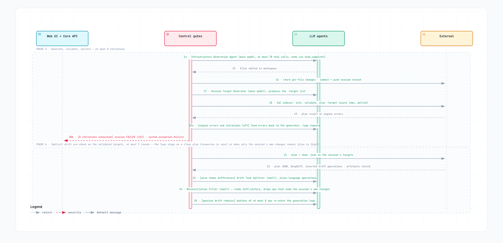
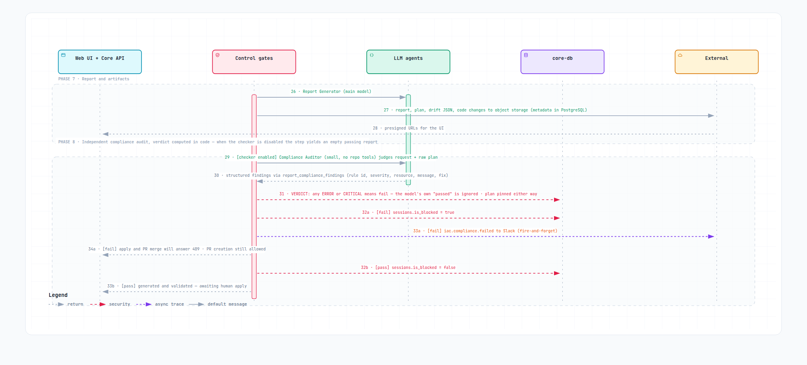
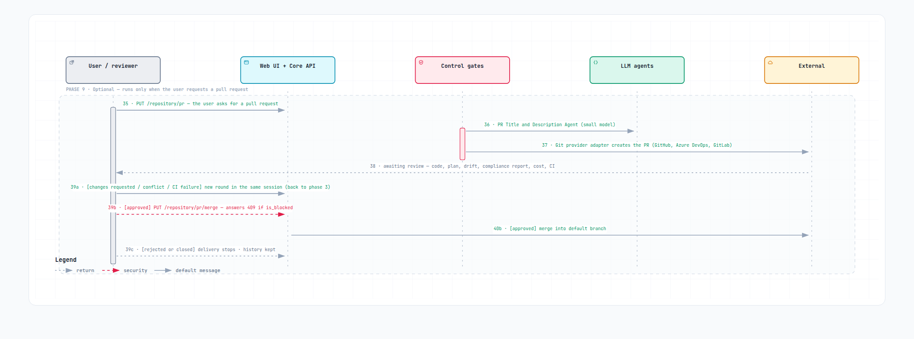
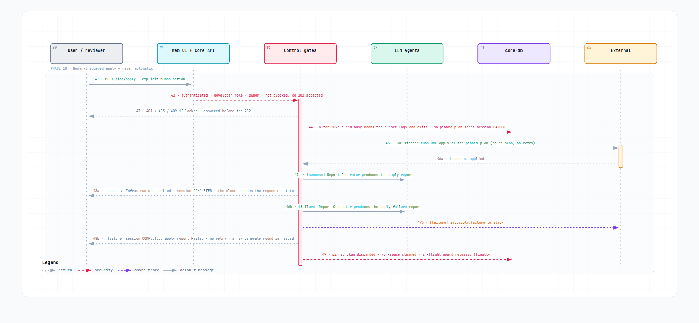

One generate session, from request to applied infrastructure, in ten phases across five sequence diagrams. Each diagram shows only the participants its phases use; the legend lists them and the arrow conventions.
Every step that changes state or blocks progress belongs to the control gates on purpose: models propose, code decides.
Phases 1 and 2: request and session

Pan, zoom, search, follow a message, switch themes. Open in a new tab
Messages 1 to 13; the diagram also covers phases 3 and 4.
| Step | What happens |
|---|---|
Request |
The wizard posts repository URL, target cloud, scope id, optional IaC
path and request text to |
Identity and role |
The authentication dependency validates the bearer JWT, or resolves
the fixed local-developer identity when auth is disabled, and the role
check requires |
Repository reachability |
The URL may carry a userinfo username (the |
Session creation |
A session row owned by the caller is created, or an existing one
resolved by |
Progress stream |
The UI subscribes to |
Guard, workspace, tracing |
The runner takes the in-flight guard, an atomic compare-and-set on the
session row. The |
Phases 3 and 4: filter and compose
| Step | What happens |
|---|---|
Request Filter Agent ( |
The small model, with read-only workspace tools, classifies the request
against the |
Prompt Compositor |
Two small-model passes select the relevant resource templates and
abbreviations from the cloud’s |
Phase 5: generate, validate, correct
Up to orchestration.max_validation_iteration generate-and-validate
iterations: 8 in the shipped config.yaml, 5 built in.

Pan, zoom, search, follow a message, switch themes. Open in a new tab
Messages 14 to 25; the diagram also covers phase 6.
| Step | What happens |
|---|---|
Infrastructure Generation Agent ( |
The main model edits Terraform files through the tool registry (read,
write, list, ripgrep search, web search), bounded by
|
Persist and push |
Every changed or new file is uploaded as a code-change artifact and committed and pushed to the session branch, so the work is durable before validation starts. |
Session Target Generator |
The main model derives this round’s |
Validation ( |
|
Correct or fail |
Engine errors go back to the generation agent as the next query and the
loop repeats. After |
Phase 6: implicit drift pre-check
Runs on the targets validation has just produced, at most twice.
| Step | What happens |
|---|---|
Inspect the plan |
The core runs |
Split and filter |
The Drift Task Splitter (main model) turns the differences into
plain-language operations, the Reconciliation Filter (small model)
reads the branch’s |
Decide |
Genuine drift re-enters the generation loop in batches of
|
Full mechanism, including the fingerprint that makes reading an existing plan safe: Drift detection and remediation.
Phase 7: report and artifacts

Pan, zoom, search, follow a message, switch themes. Open in a new tab
Messages 26 to 34; the diagram also covers phase 8.
| Step | What happens |
|---|---|
Report Generator ( |
The main model turns the final plan into a JSON report: create, update,
delete and recreate counts, detailed changes, an impact banner ( |
Artifacts |
Report, plans, drift JSON and code changes go to object storage under
|
Phase 8: compliance audit
| Step | What happens |
|---|---|
Compliance Auditor |
With |
Verdict in code |
The tool handler recomputes |
Lock or release, then pin |
The handler first writes |
Phase 9: pull request and review

Pan, zoom, search, follow a message, switch themes. Open in a new tab
Messages 35 to 40.
| Step | What happens |
|---|---|
Pull request on demand |
|
Review outcomes |
Requested changes become a new request in the same session — back to
phase 3, a new round on the same branch — which is possible while the
session is |
Phase 10: apply

Pan, zoom, search, follow a message, switch themes. Open in a new tab
Messages 41 to 49.
| Step | What happens |
|---|---|
Explicit human action |
|
Gates |
A valid identity, the |
One apply |
The iac sidecar runs a single |
Outcome |
The Report Generator reads the engine output either way and writes an
|
Cleanup (always) |
The pinned plan is discarded, the run directory is removed from the
volume, and the in-flight guard is released in a |
Diagram legend
Each diagram is an Archify sequence diagram: participants across the top, time running downwards, one arrow per message.
Participants — the boxes at the top; each diagram shows only the ones its phases use.
| Participant | Meaning |
|---|---|
User / reviewer (grey) |
Human actor. Only a human starts a request, creates or merges a pull request, or applies. |
Web UI + Core API (blue) |
The React application and the FastAPI routers: authentication
dependency, |
Control gates (red) |
Application code with no model judgment: session and lock handling, the in-flight guard, git operations, drift calculation, the compliance verdict, artifact storage. Every state change and every blocking decision happens here. |
LLM agents (green) |
Prompt-driven agent loops. Each message into this participant names the
agent and its model role ( |
core-db (purple) |
The PostgreSQL rows the gates read and write: the session, its status,
the in-flight guard, |
External (amber) |
Git hosting, the IaC engine in the iac sidecar, object storage, Slack through the notifications sidecar, and the cloud platform. |
Arrows and bands
| Element | Meaning |
|---|---|
Solid grey arrow ( |
A call or hand-over in the direction of the arrow. |
Dashed grey arrow ( |
A result flowing back: engine output, structured findings, an HTTP status, a message shown to the user. |
Dashed crimson arrow ( |
A gate or a state change with authority over the flow: identity and role checks, refusals, the compliance verdict, the lock flag, the in-flight guard, cleanup. |
Dashed purple arrow ( |
A fire-and-forget notification to the notifications sidecar. It never fails the pipeline. |
Vertical bar on a lifeline |
An activation: that participant is busy for the span the bar covers. |
Dashed band labeled |
One phase, numbered as the sections above. The label also carries facts that have no arrow of their own, such as the conditions under which a bounded loop stops. |
Message numbers |
1 to 49, continuous across the five diagrams. They do not map one-to-one onto the steps in the tables above, which group several messages per step. |
A number with an |
Mutually exclusive arms of one decision — |
|
A bounded loop with its ceiling, at the shipped values: 70 model turns per agent loop, 8 validation iterations, 2 drift pre-check rounds, 8 operations per drift batch. |
Agent catalogue
Every message into the agents lane is one of the agents below. Each is an orchestration loop rendered from a Jinja layout with prompts fetched from Phoenix, given a fixed tool set, and ended by a sentinel tool whose structured arguments are the agent’s result.
| Agent | Model | Tools available | Ends via | Where it appears |
|---|---|---|---|---|
Infrastructure Generation Agent |
main |
|
|
Phase 5; re-entered by drift batches in Phase 6 and by dedicated drift sessions |
Session Target Generator |
main |
|
|
Phase 5, before every |
Drift Target Generator |
main |
the same read-only set, rendered with the
|
|
Dedicated partial drift sessions only, never in the generate flow |
Report Generator |
main |
Plan and apply reports: |
|
Phase 7, Phase 10, and dedicated drift sessions |
Request Filter Agent |
small |
|
|
Phase 3; also the first step of partial drift sessions |
Prompt Compositor |
small |
none besides its sentinel |
|
Phase 4 |
Status Message Agent |
small |
none |
plain text |
Every status change; its text is what the SSE stream carries |
Drift Task Splitter |
main |
|
|
Phase 6 and dedicated drift sessions |
Reconciliation Filter Agent |
small |
|
|
Phase 6 only, generate rounds |
Drift Exception Filter Agent |
small |
None besides its sentinel; rendered with the cloud’s |
|
Phase 6 and dedicated drift sessions, after the reconciliation filter |
Compliance Auditor Agent |
small |
none besides its sentinel; input is the first request and the raw plan output |
|
Phase 8, generate rounds, when the checker is enabled |
PR Title & Description Agent |
small |
none |
|
Phase 9 |
Agents never delegate to one another and there is no supervisor agent:
the handler classes call each in a fixed order, and every loop has a
configured ceiling (orchestration.max_tool_chain_executions,
max_validation_iteration, max_drift_reports,
drift_group_operations; the drift pre-check inside a generate round is
fixed at two iterations).
Deterministic, non-LLM components fill the other lanes: the FastAPI
routers and use-case handlers; PostgreSQL session, ownership, status,
in_flight and is_blocked controls; the git workspace service and the
GitHub, Azure DevOps and GitLab adapters; the iac sidecar; drift
calculation (plan_to_drift, DeepDiff); the code-computed compliance
verdict; object storage with presigned URLs; SSE status delivery; the
notifications sidecar.
How a session ends
A round leaves the session in one of three statuses, or writes none at all.
Only FAILED is terminal, and it is terminal for the session, not only for
the round: the in-flight guard refuses to start a run on a session whose
latest status is FAILED. A follow-up request, apply or drift round sent to
it is still answered 202, and its runner then logs
runner not started: Session … is finished and cannot be resumed and
exits, so only a new session carries the work forward. COMPLETED and
UNCOMPLETED are resting states that accept a new round whenever the owner
sends one. The progress stream closes on any of the three.
FAILED: the session is closed
| Outcome | Reached when | Status message and side effects |
|---|---|---|
Validation never converged — phase 5 |
All |
|
Apply without a pinned plan — phase 10 |
The session’s last round was drift-only, or an earlier apply already consumed the pin. Every apply discards the pin, whether it succeeded or not, so a second apply on the same session always ends here |
|
Pipeline failed — any phase |
Any error the core raises as one of its own typed exceptions: a model or tool error, a drift remediation batch that exhausts its own validation attempts, a sidecar timeout, a git or storage failure, a prompt Phoenix cannot return |
|
COMPLETED: the round finished, the session stays open
| Outcome | Reached when | Side effects |
|---|---|---|
Validated, unlocked — phase 8 |
The audit passed or the checker is off, and the report’s impact banner is
not |
|
Validated, locked — phase 8 |
Any |
|
Applied — phase 10 |
The engine’s apply exited with code zero |
|
Apply failed — phase 10 |
The engine’s apply exited with a non-zero code |
Not an exception: the handler writes an |
A failed apply and a successful one leave the same COMPLETED status. The
apply report and the iac.apply.failure notification are the only places
the difference shows, and the next step after a failure is a new generate
round, never a second apply.
UNCOMPLETED: the request needs reformulating
The Request Filter Agent declined the request in phase 3 as out of scope, prohibited or ambiguous, or answered it as a question. The rationale is added to the conversation, and the owner’s next request opens a new round of the same session.
No status written
These outcomes leave the latest status as it was.
| Outcome | Reached when | Effect |
|---|---|---|
Pull request open — phase 9 |
The owner created a pull request |
Pull request recorded. Pull-request creation is not lock-checked; the merge is. |
Changes requested — phase 9 |
A reviewer asked for changes, or the pull request’s own CI or a merge conflict failed it. Nebula does not watch the pull request: the owner relays the problem as a new request |
A new round of the same session starts at phase 3, on the same branch. |
Pull request rejected or closed — phase 9 |
The reviewer closed the pull request |
History and artifacts kept; the session still accepts new rounds. |
Concurrent run dropped — phase 2 |
A generate, drift or apply request reached a session with a run already in flight |
|
Run ended without a status — any phase |
An error outside the core’s own exception types, such as an unexpected
library or runtime error. The runner converts only its own typed exceptions
into |
Run directory removed and guard released, but no status and no
notification are written. The latest status stays at an in-progress value
such as |
How the architecture works
The mechanisms behind the flow above, one concern per subsection.
Browser delivery and ingress
The nginx image compiles the SPA in a Node builder stage and serves the
bundle itself; there is no separate frontend container. The SPA uses
relative paths, so nginx is the only address the browser knows: /api
proxies to core:8000, a dedicated events location disables proxy buffering
so progress streams immediately, and /monitoring/ exposes the Phoenix UI.
nginx authenticates nothing — bearer tokens pass through to the core.
Authentication
Before rendering, the SPA fetches the only unauthenticated route,
GET /api/v1/auth/config, which returns the OIDC issuer_url,
client_id, optional audience and resolved scope from config.yaml.
| Mode | Behaviour |
|---|---|
Disabled — blank |
The SPA mounts a dev provider, and the core resolves every request to a
fixed local-developer identity ( |
Enabled |
Authorization Code flow with PKCE as a public client — no client secret
exists anywhere. Login redirects to the identity provider and returns to
|
On the core, a bearer-token dependency guards every protected route. It
validates the token against the issuer’s JWKS — fetched lazily on first use
and cached, so boot never depends on the identity provider — checks iss
(with or without trailing slash), aud (oidc.audience, or client_id and
api://<client_id> when blank) and exp/nbf within
clock_skew_seconds, requires exp, iss and sub, and accepts only
asymmetric algorithms. Claims then resolve to a user keyed by issuer and
subject: the first request provisions the row, later ones sync e-mail and
display name, and a token whose email matches admin.default_root_email
with email_verified: true is elevated one-way to devops + admin from
that user’s next request on.
Authorization and ownership
Two independent role groups live on the user row:
| Group | Values | Gates |
|---|---|---|
Operation role |
|
|
Panel role |
|
|
Every session has an owner. The sessions list is always scoped to the caller; writes — iterations, apply, pull requests — are owner-only, and reads, including the progress stream, are open to the owner or to anyone holding a panel role.
Separately from roles, the wizard’s preflight
POST /api/v1/auth/authorize asks the authz sidecar whether the caller may
touch a given cloud project and environment. Disabled — the default — the
core answers "authorized" with no network call; enabled, a timeout or
unreachable sidecar is returned as 504/502, never as an allow. This is a
hook for enterprise cloud-access policy, not the access control for
Nebula’s own data.
Session creation and orchestration
A POST to /api/v1/iac/generate, /iac/drift or /iac/apply creates or
resolves a session owned by the caller and returns 202 Accepted. The
git ls-remote reachability check runs only on requests carrying a
repository URI — the first call of a generate or drift session. Iteration
calls send only a session id and the new text, and an apply request has no
repository field at all, so both skip it.
The pipeline then runs in-process as a background task; there is no external job queue. Each run gets a freshly assembled object graph: the two model providers, the workspace tool registry, Phoenix-backed template services, and the validation, filter, report, drift, task-splitting and pull-request services.
Model routing
The generate flow advances through the statuses the progress stream reports
— filtering, generating, validating, report — as described in phases
3 to 8. Routing is by prompt type, not by provider:
| Model role | Used by |
|---|---|
|
Infrastructure generation, target calculation, report writing, drift task splitting |
|
Request filtering, prompt composition, status messages, pull-request text, the reconciliation filter, the drift exception filter, the compliance audit |
IaC and mapping sidecars
The iac sidecar is a deliberately thin executor: a reference for non-production installs, meant to be re-implemented against the organization’s own execution platform in production. Each POST enqueues exactly one engine command (OpenTofu by default) as an asynchronous job and returns a job id; the core polls it — 5-second interval, 1-hour budget per job — and does all the sequencing itself.
| Behaviour | Detail |
|---|---|
Three verbs over the plan artifact |
|
|
Once per round, and re-run only when the engine’s own output asks for it,
which keeps retry loops from re-initializing the same workspace. Both
containers read the same |
|
The engine runs with |
The sidecar owns no backend decision |
Beyond the optional |
The mapping sidecar translates a business identifier into a repository
reference; the reference implementation is an identity passthrough. It may
also answer with the terraform provider and cloud scope that identifier
deploys to, and those answers are best effort: null means "unknown, ask
the user", never "there is none". The wizard skips the step for every
field the mapper fills, so a guess is a question the user never gets to
correct — an implementation that does not know must say null.
Drift detection and remediation
All drift work runs through one bounded loop:
-
Read the drift out of a plan. Detection is
show -jsonover a plan artifact, so the loop takes the plan to start from as a parameter: the workspace, the plan file, the targets it was produced with, and a fingerprint of the working tree — the SHA-256 ofgit status --porcelain=v2 --branch --untracked-files=all— sampled immediately after the plan job returned. A generate round passes the plan it has just validated, so its pre-check costs oneshow; a dedicated drift session passes nothing and the loop plans first. -
Invert it. Each resource’s
beforeandafterare diffed and the result inverted into "make the code match the infrastructure" operations. The drift JSON is stored as an artifact; the plan text is stored by the validation loop that produced it, one artifact per attempt. -
Split, filter, and remediate. A clean plan stops the loop. Otherwise the Drift Task Splitter (main model) turns the JSON into plain-language operations, the Drift Exception Filter drops every operation the cloud’s
<cloud>-guidelines-drift_exceptionsrules cover (logging each one), and the survivors, chunked into groups ofdrift_group_operations(8), each re-enter the generation and validation loop with the forbidden-actions block omitted, the intent being reconciliation. When every operation is excluded the loop stops there: re-planning would only rediscover the same drift.
The fingerprint is what makes reading an existing plan safe: any plan the working tree has moved past is re-planned, and one naming a different workspace is refused. It covers uncommitted and untracked files, so it moves for generated code while ignoring the engine’s own output. Every reconciliation group re-plans and the last of those is what the next iteration reads; an iteration whose split yielded no operations has no plan to hand on, so the next one plans for itself. Every iteration that could have changed therefore reads live state.
The loop has two entry points, differing in what they target and whether session intent is filtered out:
| Entry point | Targets | Behaviour |
|---|---|---|
Pre-check inside every generate round |
The session’s own validated targets |
At most two iterations, filtered. The Reconciliation Filter agent must call
|
Dedicated drift session — |
Full drift takes the whole root module, an empty target list. Partial drift takes the targets the Drift Target Generator chooses after the request filter. |
Up to |
How the DRIFT report is written. The drift report is the one report the
generator does not receive as a text to summarise: it reads the branch for
itself. The report service gives the drift report the workspace-inspection
tool set instead of web_search, and the drift branch of the report
layout makes diff_history a required first call and the sole source of
truth for the remediation. That works because every reconciliation group
commits and pushes inside the validation loop before the report runs, so
the branch’s committed diff against the default branch, plus untracked
files, is the reconciliation; no remediated resource may be named that
the diff does not show. The drift handler therefore no longer serialises
the session history into the report query and passes only what the
remediation left out, in two labelled blocks that map one-to-one onto
optional report fields:
| Block in the report query | Report field | When it appears | Effect on status |
|---|---|---|---|
"Unreconciled drift" |
|
The loop ended out of sync: genuine drift the iteration ceiling left behind, or a drift read that failed outright |
|
"Whitelisted exceptions" |
|
The Drift Exception Filter excluded operations; one entry per excluded change, with the rule that covers it |
None. Leaving them alone is the intended outcome, so the round can still
report |
Both blocks stay out of the schema’s top-level required, and
resource_address is optional inside them — a failed drift read names no
resource, and a rule may cover a type or a naming pattern rather than an
address — so a thin answer cannot fail validation and cost an otherwise
good report. One consequence of reading the branch rather than a per-round
record: the diff is branch-wide, so in a multi-round drift session every
report describes every change on the branch, including the ones earlier
rounds made.
The pre-check replaced an earlier design in which a predictive target
agent guessed the affected resources and remediated drift before any code
was generated. That agent and its PREDICTIVE mode were removed, and the
shared Phoenix guideline was renamed from predictive_targets to
targeting_policies.
Compliance gate
| Aspect | Detail |
|---|---|
Where it runs |
Only in the generate handler, after the report is written, behind
|
How it audits |
A second, independent small-model agent loop. Its query is the session’s
first user request plus the raw plan output, rendered into the local
compliance-checker layout with the |
Persistence |
The report is stored in object storage under the round, as
|
Verdict in code |
The tool handler recomputes |
Effect |
Every generate round writes |
Progress and persistence
Status rows are appended to PostgreSQL with a Redis write-through; there is
no message broker. The stream endpoint polls the last status every 4-5
seconds — usually from Redis — and sends small JSON events until a terminal
status. The SPA reads it with fetch and a streaming response rather than
EventSource, which cannot carry an Authorization header, and retries
three times with exponential backoff. A 401 is not retried and surfaces as
a session-expired event. Token and ownership are checked once, at connect
time.
Artifacts and telemetry
-
Reports, plans, drift JSON and per-file code changes go to the
nebula-artifactsbucket, metadata to PostgreSQL. The browser fetches them through presigned URLs signed against the public port-9000 endpoint nginx forwards to RustFS. -
Every run installs a per-session tracer exporting OpenInference-annotated spans — LLM, tool, chain, Terraform — to Phoenix over OTLP/HTTP.
-
Prompt templates live in Phoenix as a runtime registry, seeded at boot and fetched per request by environment tag, so prompt edits apply without a redeploy.
-
Notifications are fire-and-forget: the facade no-ops when the sidecar is disabled and logs every send failure instead of failing the pipeline.